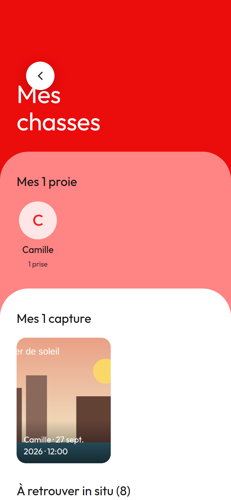
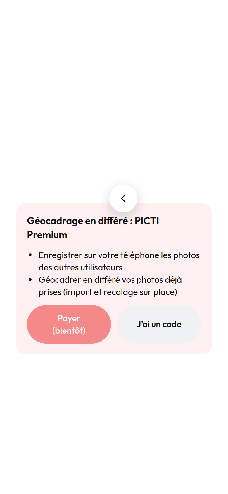
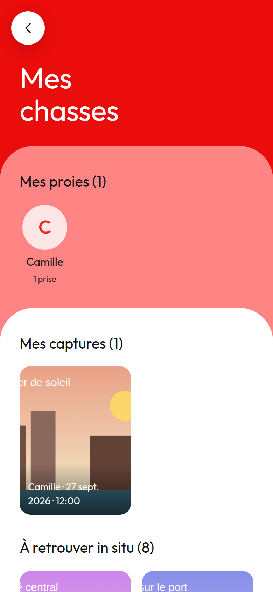
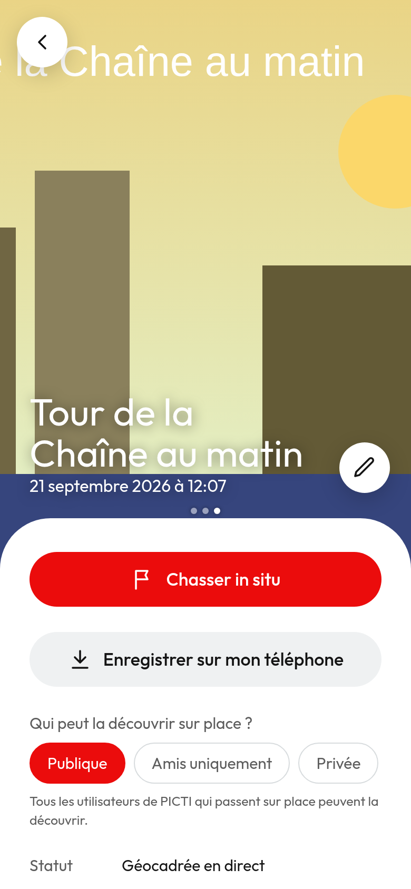

Corrigé en 0.011.2
Le bouton retour chevauche les titres, et le crayon « Renommer » a disparu
Sur « Mes chasses » et « À proximité », le bouton retour est posé sur le titre. Sur l’écran Premium du recalage, il flotte au milieu de la page. Sur le détail d’une de mes photos, le crayon pour la renommer n’est pas visible du tout.
Cause trouvée : dans src/styles.css, la règle .round-btn { position: relative } (ligne 1275, ajoutée pour la pastille de compteur en 0.002) passe après .back-btn et .detail-edit et annule leur position: absolute. Une ligne à corriger.



